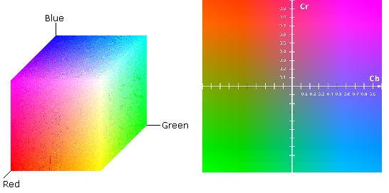
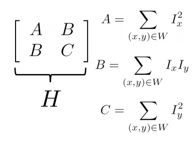
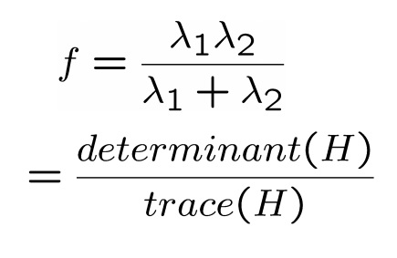
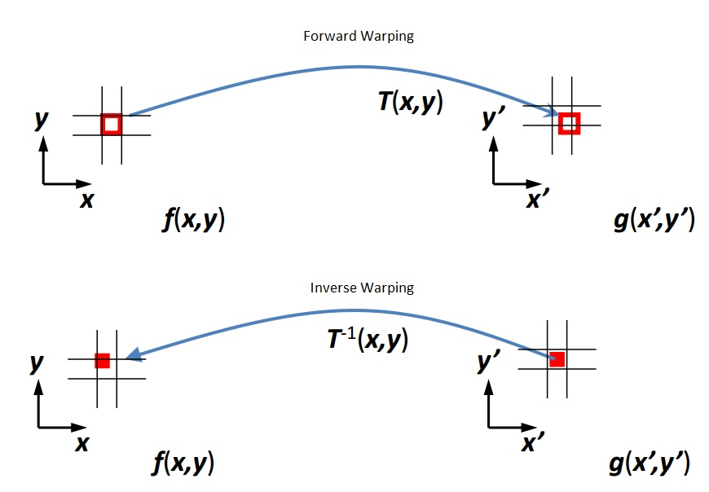
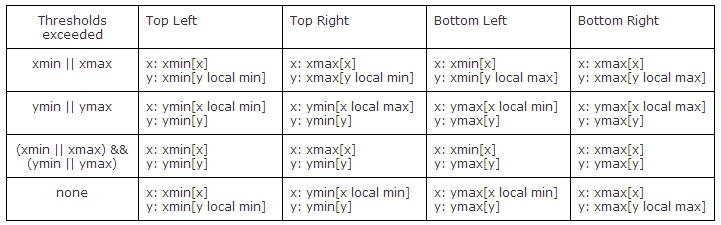
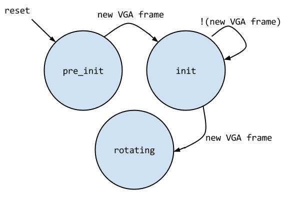
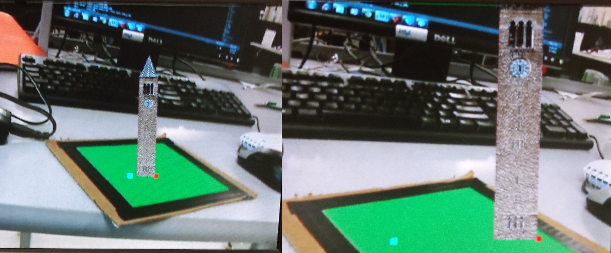
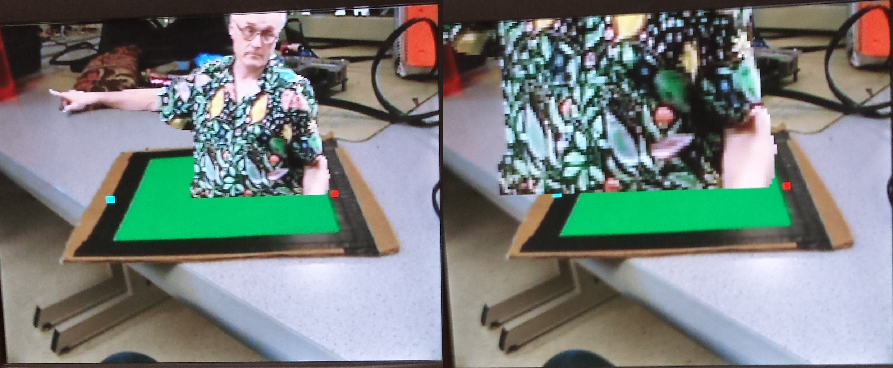
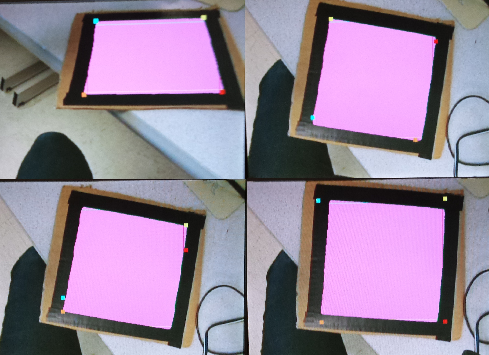

Introduction
For my ECE 5760 final project, I have created an augmented reality system that in real time detects the corners of a flat surface and draws an image over the original video feed. Augmented reality is a technology that superimposes a computer generated image on a user’s view of the real world to provide more information. The goal of this project is to celebrate the end of my time as an Electrical and Computer Engineering undergraduate. What better way than to put Bruce Land, one of the best instructors at Cornell, and the Cornell clock tower, onto everything you see. Hence my project, Bruce in a Box.
My system makes use of a variety of digital signal processing and computer vision techniques, resulting in a robust and reliable system. The hardware I utilized was the DE2-115 board by Altera, a Video Camera, and a VGA monitor. All of the functionality of my project is achieved through custom hardware written in Verilog. There are an extensive number of modules, and each one is designed to be as modular and parameterizable as possible.
The user holds up any size of green paper to the video camera. The VGA display screen then displays the scene with an image of either the Cornell Clocktower or Bruce Land superimposed on the green paper. When the user moves or rotates the piece of paper, the image of Bruce or the clocktower rotates, scales, and moves with it. The final result is an interactive, responsive, and amusing augmented reality system that implements a large range of mathematical, digital signal processing, and computer vision algorithms and concepts.
[top]
High Level Design
Rationale and Inspiration:
The inspiration for the project came from a Kenyan elections campaign that utilizes augmented reality. The potential voter receives a postcard with a static picture of a flag. When a smartphone camera is pointed at the postcard, the flag animates and plays the national anthem. A link to the video is included in the Appendix. Having taken a Computer Vision course in the fall and being currently enrolled in a course on Digital Signal Processing, I immediately seized upon this idea. I decided to tailor it to Cornell’s School of Electrical and Computer Engineering, and instead of playing a video on the VGA monitor, display a scalable, 3-D like replica of the Cornell clocktower as well as the instructor of ECE 5760, Bruce Land.
Background Math:
There are multiple mathematical and computer vision concepts implemented in this project. The big ones are as follows:
- Color Detection based on YCbCr Space
- Median Filtering over space
- Median Filtering over time
- Sobel Edge Detection
- Harris Corner Detection
- Corner Tracking
- Image Transformations, Inverse Warping
- Bubble Sort
Color can be represented in a variety of formats. Probably the most common is RGB space, where the red, green, and blue components determine the color of a single pixel. However, RGB color schemes are highly sensitive to changes in lighting. In order to make my system more robust in detecting green, I utilize the YCbCr color space, which is a family of color spaces that separate the luma component, or the light intensity, from the hue component. By using YCbCr space, I am able to always detect the green hue regardless to changes in lighting.
{kind=link}
Median filtering is exactly what its name implies - a filter takes the median value over a 1-D or 2-D space. The advantage of median filtering is that it throws away outliers while still preserving edges. This differs from a Gaussian smoothing functions, which dilute edges and make all transitions more gradual. A 1-D, n-wide median filter can remove up to floor(n/2) bits of noise. I perform median filtering over space, in other words on the green pixels detected by my system. This allows me to smooth edges and remove small pixel jags that may be present. I also median filter over time on detected corners. Doing so prevents large jumps and noisy data coming from the corner detection module. The detected corners of the green square move smoothly without a significant delay. Each detected green pixel is also median filtered over time. This ensures that only pixels that are consistently green are factored into corner calculations.
Sobel Edge Detection and Harris Corner Detection are two Computer Vision Algorithms used to extract features from an image. While my final system does not utilize Harris Corner Detection, I fully implemented and tested this algorithm. The algorithm is as follows:
- Use an nxn Sobel filter to get the x-gradient and y-gradient from the image
- For a window of size wxw, calculate the following Harris matrix:  Optionally weight the values of Ix and Iy by the distance of that pixel from the center pixel of the window
- Calculate the determinant and trace of the matrix, and use that to calculate c, the corner strength feature formula corner strength: 
- For all values of c above a certain threshold, mark that pixel as a corner
{kind=link}
{kind=link}
Tracking the corners of a square in 3-D space falls underneath the larger problem of resolving motion ambiguities, a difficult task. The mathematical approach to resolving motion ambiguity is to use coupled Markov random fields that estimate uncertainty on a local area. These estimates are then used to determine which direction the object rotated. However, this is a rather complicated algorithm involving a lot of divisions, a difficult task on an FPGA. So I opted to create my own algorithm to track the corners of the rotating square. This algorithm will be discussed in detail in the Hardware Design Section.
Image transformations are operations that can translate, rotate, skew, scale, shear, or project an image in 2D space. Normally the transformation is represented in one or several matrices, and these matrices are convolved over the entire image. There are two ways to get from a pixel’s original location in an image to its new location. The first method is forward warping. In this method, every point in the original image is transformed and “sent” to its new location. However, this mode of warping can result in holes and splattering. The better approach is to perform inverse warping. This algorithm goes through every pixel in the new, transformed image, undoes the transformation, and figures out which original pixel to grab. If the original pixel happens to fall between two pixels, simply interpolate the source image. My system implements inverse warping on translation, rotation, and scale operations in order to redraw the superimposed image on to the VGA display.
{kind=link}
Bubble sort is the simplest sorting algorithm. It repeatedly steps through a list of items to be sorted and swaps items if they are out of order. The algorithm continues stepping through the list until all entries are sorted. Bubble sort, while simple, is inefficient, achieving at worst O(n^2) performance. I have implemented Bubble Sort as a Verilog task that can be called repeatedly by different portions of a module.
Logical Structure:
The DE2-115 board receives a video feed in NTSC standard video format from a digital camcorder. The DE2-115 saves the incoming pixel information to an on-board SDRAM and later converts the video feed into YCbCr and RGB formats. Then, a VGA controller takes the RGB information and generates the appropriate VGA control signals. In order to manipulate the data to the VGA screen, I intercept the pixel color data and VGA control signals coming out of the VGA controller and put them through a 20 VGA clock delay buffer. At the same time, my system utilizes the color information and several VGA control signals to come up with the new image to be superimposed on the original video feed. Thus, at the end of 20 clock cycles, mux’s decide whether the original VGA pixels from the video input are used or whether pixels generated by my system during that 20 cycle delay should be displayed on the VGA screen. By using this buffering system, I am able to manipulate the image on the VGA screen in real time. There is technically a slight lag between the real world and what’s displayed on the VGA screen, but it is so small that it is not noticeable by the user. A logical overview of the system is included below:
{kind=link}
Hardware/Software Tradeoffs:
There is no software in this design; all functionality is implemented using full custom Verilog hardware. I chose to stick with full custom hardware because I have finer grained control over resource utilization. Additionally, had I chosen to use a Nios II system, there the potential for severe bus contention on the Avalon switch fabric since so many modules are attempting to communicate with each other.
In hardware, there are several tradeoffs between speed, space, and accuracy. When median filtering over time, i.e. over VGA frames, using more frames leads to a cleaner edge. However, to store more history, more SRAM must be used, and there is a longer lag effect on the screen. To address this tradeoff, I allow the user to choose anywhere from 0 - 4 frames for the time averaging threshold.
When median filtering over time on the corners, the longer the filter the more outliers you can remove. However, there is limited storage in SRAM, and the more history you keep, the more SRAM you use. I found that median filtering over 11 frames created smooth corner tracking without hogging a lot of SRAM space.
Finally, when median filtering over space I use a 5x5 median filter. Again, a larger filter removes more outliers, but also requires buffering more of the incoming VGA pixels. I found that 5x5 median filtering removes a lot of green pixel noise while keeping the RAM utilization reasonable.
When deciding which Altera Board to use, the DE2 or the DE2-115, I chose to the use the DE2-115 because it has more dedicated multipliers and SRAM. The downside is that throughout the majority of this course, we have used the standard DE2 board. There was some overhead in getting the Altera example project up and running on the DE2-115 board, but this cost was far outweighed by the benefits of increased computational power and memory.
Relationship of design to standards:
My design requires the video signal to be in NTSC video standard form. The data is output as a VGA signal. Thus, television and computer display standards are at play. These standards are implemented using IP cores from Altera that are included in the DE2_115_TV example.
There are numerous patents held by companies regarding augmented reality systems. However, I did not reference any of these patents nor do I plan on patenting this invention, so I will spare you and myself a detailed patent search.
[top]
Hardware Design
Overview:
The hardware in this design must accomplish a series of tasks in order to make this project work. The steps are as follows:
- Interpret an NTSC video input from the video camera
- Reliably detect the green sheet of paper with little noise on the edges of the paper
- Follow the corners of the green sheet of paper in order to detect the paper’s orientation in 3-D space
- Read out the clocktower or Bruce image from ROM
- Transform the image according to the orientation of the green sheet of paper
- Output the augmented video feed to the VGA screen
Top Level Module:
The top level module in this design is based off of the Altera DE2-115 TV example provided as a part of the University Program Examples. Within the top level, there are various components written and instantiated by Altera that deal with translating the TV Decoder signal into the necessary control and data signals for a VGA controller. For more details on Altera’s implementation, please refer to the Altera Media Computer System guide linked in the Resources section. My hardware sits between the TV Decoder blocks plus the VGA controller and the actual VGA monitor. All information meant for the VGA monitor is intercepted and either manipulated and delayed to the monitor or simply delayed by 20 VGA clock cycles. A block diagram of the overall system is included below.
{kind=link}
VGA Controller:
The VGA Controller provided by Altera has several important signals that I utilize in my design. First, it always outputs the current (x,y) pixel coordinates on the VGA screen along with the RGB information for that pixel. I use these (x,y) coordinates when performing inverse warping to project a new image onto the screen. The VGA Controller also outputs VGA_VS, or a vertical sync, indicating a new 640x480 frame on the VGA display. I use this new frame signal to perform my time median filtering over frames as well as to make transitions in the state machine that implements the corner following algorithm.
Delay Unit:
A tricky part of this design is ensuring that all VGA control and data signals arrive at the VGA controller at the same time. That means that I must keep track of, at all time, the latency from input to output for each of my modules. At the end, right before the VGA controller, every data and control signal must be delayed by exactly 20 clock cycles. In order to do this, I created a fully parameterizable delay unit. The user specifies the data width and the number of delay cycles, and the module instantiates the appropriate sized buffer to delay the signal by the specified amount. These delay units are seen throughout my design, and are meant to sync up all VGA signals going to the VGA controller. Twenty delay cycles was arbitrarily picked because it gives the system ample time to complete all of its operations. An optimization to the system would be to reduce this delay time to only the amount that is absolutely necessary.
Harris Corner Detector:
The Harris Corner Detector in my system is fully implemented and tested, but was not used in my final design. This is because even with excellent corner detection, the issues of corner and motion ambiguity still exist. The system is no better off using Harris Corner Detection over simple x/y min/max corner detection. This will be discussed further in the corner tracking state machine section.
The Harris Corner Detector uses a ram shift buffer to buffer five full lines of the incoming VGA RGB data. The module then selects a 5x5 window from those full 5 lines. On the middle 3x3 pixels of that 5x5 window, I use a Sobel filter to calculate the x and y image gradients. A Sobel filter is used because it approximates a Laplacian of a Gaussian. The LoG (Laplacian of a Gaussian) filter both smooths the image and takes the derivative in a single matrix operation.
Next, for each pixel in that 3x3 window I calculate Ix^2 and sum over that window, Iy^2 and sum, and Ix*Iy and sum. The next step is to calculate A, B, and C of the Harris matrix by using combinational additions.
Finally, the trace and determinant are calculated to get the corner strength function. Note that the trace is scaled down in order to ensure that the final value of the corner strength function is greater than 0. This is because I am using integers in Verilog, not fixed or floating point numbers, so if the trace (which is in the denominator of the corner strength function) is too large, c will simply be 0. In practice I found that scaling down by a factor of 8 (.125) worked well.
Color History:
In order to perform median filtering over time, previous frames must be stored. To minimize the amount of SRAM utilized, I chose to only store a ‘1’ if the pixel was previously determined to be green and ‘0’ if the pixel was not. Each pixel in the screen gets four bits of history, so the entire screen uses (4bits)*640*480 = 1200kB of SRAM. I utilize a dual ported SRAM to allow my system to simultaneously read history from the SRAM as well as update the history with new information.
Upon reset, both ports are used to overwrite the SRAM with all 0’s. Afterwards, the read address is controlled by the VGA_X and VGA_Y coming out of the VGA controller and the write address and write data are controlled by the outputs of the color detection module.
The SRAM takes two cycles to return data and the module outputs data on the rising edge of a clock. Thus, there is a three cycle clock delay from input to output of the color history unit. In order to keep the incoming and outgoing read addresses and data in sync with the rest of the system, I also delay and output the incoming read address. That way the (x,y) coordinates coming out of the color history unit correspond to the history that is output.
Spatial Median Filter - Color:
The median filter on the VGA screen pixels seeks to smooth the detected edges of the green piece of paper in order to make corner tracking easier. First, the Cb, Cr information from the TV decoder modules is checked to see if it is below the thresholds for green in YCbCr space. If so, the value input to the median filter is ‘1’. The median filter instantiates another ram shift buffer to buffer five full lines of VGA information about whether the pixel was green or not. I choose to buffer a single pixel (‘1’ if pixel green, ‘0’ if not green) rather than the full RGB or YCbCr information in order to minimize the amount of space used by the RAM shift register. From those five full lines the module picks out a 5x5 window. I created a Verilog function called COUNT that counts the total number of ‘1’s in that 5x5 window. If the number of green pixels is greater than 12, we know that the majority of pixels in that window are green, and the median filter outputs a ‘1’ for its decision.
Because I am using a 5x5 buffer and clocking the outputs, the median filter unit has a four clock cycle latency. This is reflected in the names of the outputs and the outputs’ corresponding delay units.
Color Detection:
The color detection unit takes the current median color output from the color spatial median filter and the history of the past four frames for each pixel and decides whether or not that pixel will be declared green or not. It also counts the total number of pixels, per frame, that it has determined to be green. This count is used in the top level module to detect whether or not there is a green object in view of the camera. Finally, it also determines, per frame, the maximum and minimum x and y values of green pixels. These values are used by the corner tracking algorithm.
The color detection unit takes an input from the switch to determine the time threshold. If the current median color is green and the number of past greens for this pixel is above the threshold, then that pixel is declared to be green. Then, the module checks to see if the (x,y) coordinates of this green pixel are the x/y max or min for this frame. If so it updates the appropriate x/y min/max. Every new frame, as indicated by the VGA Vsync signal, the xmin, xmax, ymin, and ymax are reset and the min/max detection starts anew.
Corner Tracking State Machine:
Tracking the corners of a piece of paper and resolving motion ambiguity is one of the most challenging aspects of this project. I designed, tested, and discarded many different algorithms in the development of the final corner tracking state machine. The basic algorithm is to call the pixel with the minimum x value the top left, the pixel with the minimum y value the top right, the pixel with the maximum x value the bottom left, and the pixel with the maximum y the bottom right.
However, this naming scheme does not work when the rectangular or square piece of green paper has edges that are horizontal or vertical (or nearly so) to the VGA screen borders. Additionally, this naming scheme can’t follow a corner as it rotates. For example, as soon as the top left pixel, which was at first called so because it was the pixel with the minimum x value, rotates enough that it is no longer the pixel with the minimum x value, a different corner is named the new top left pixel, and the old top left pixel is renamed to be something else. In the case of clockwise rotation, it is re-evaluated to be the top right pixel.
In order to address the issue of horizontal and vertical edges, I count the number of pixels encountered along the x/y min and max. I store the values of the start and the end of each segment that falls along the x-min, x-max, y-min, and y-max. For example, along the minimum x pixel, I store (xmin, y local min) and (xmin, y local max). If the count along either xmin or xmax exceeds a certain threshold, then I determine that I am in the special horizontal state. If the count along ymin or ymax exceeds a threshold, I am in the special vertical alignment case. If both x and y thresholds are exceeded, then the piece of paper is parallel to the camera’s plane of view and I’m in a special alignment case. If no thresholds are exceeded I can use my original, simple corner naming scheme. The counts and these maximums and minimums are reset every VGA frame, as determined by the Vsync signal.
The threshold must be carefully calibrated so that even at different scales, i.e. holding the green piece of paper closer or farther from the camera, the threshold reliably determines whether I am actually holding the paper in a special case.
here is also the issue of unsmooth green pixels detected along the edges of the paper. Despite all of the time and spatial median averaging, there are still unsmooth edges. Thus, simply counting the pixels along the x/y max/min won’t accurately reflect how aligned the piece of paper is with the borders of the VGA screen. To solve this, I create a variable max/min offset. For every VGA frame, I count the number of pixels encountered along an offset from the x/y min/max. For example, rather than counting all of the pixels that are horizontal with the minimum y pixel, I instead count all of the pixels that are horizontal with the (ymin + offset) pixel. That way I can avoid the “jaggy edges” of the actual green paper boundary.
Having detected a horizontal, vertical, or horizontal and vertical alignment case, I now select my corners differently. Each of the newly determined corners is described in the table below.
{kind=link}
There is also the issue of tracking a corner as it rotates. I attempt to solve this problem by assuming that no one corner will rotate more than 45 degrees each VGA screen. My algorithm is as follows.
- Detect the current corners using the methods described below.
- Determine which of the old corners is closest to the currently detected top left corner.
- Reassign corners based on which of the old corners is closest.
For example, let’s say that through my corner naming scheme I call the pixel with the minimum x value the top left corner. However, this so called top left is actually closest to what used to the top right corner. Then I call my new so-called top left the top right corner, and rotate all other names accordingly (new “top right” -> bottom right, new “bottom right” -> bottom left, new “bottom left” -> top left).
In order to calculate the distance between points, I write a Verilog task that combinatorially adds and multiplies to calculate the distance between two points without the square root operation at the end. Square root operations are expensive in hardware, and since every distance is not being square rooted, they can all be compared without issue.
All of these calculations reside within a finite state machine. Upon reset, I enter a pre init state where I wait for the next falling edge of Vsync, which indicates a new VGA frame. This is so that I don’t accidentally miss out on information on the VGA screen because of an asynchronous reset.
Next I enter the init state. In this state, which the system is moving through the VGA screen, I keep track of (xmin, y local min), (xmin, y local max), (xmax, ylocal min), (xmax, y local max), (x local min, y min), (x local max, y min), (x local min, y max), and (x local max, y min). I also keep track of the counts at an offset from the x/y min/x points, as described above. When I finish a screen while in the init state, I simply name a certain corner top left and the rest accordingly. I then enter the steady state (rotating).
In this state I do the same track as before with the x/y max/min’s and their corresponding counts. However, when assigning the names of the corners, I check first to see which corner from the previous VGA screen my so called “new top left” is closest to. Depending on that, I reassign the names of my corners. I stay in the steady state as long as there is no reset. The final state machine is as follows:
{kind=link}
Time Median Filter - Corners:
The corner median filter over time takes the (x,y) coordinates of the four corners from the corner tracking state machine. It then stores 11 VGA frames’ worth of corner coordinates in shift registers. I implemented bubble sort in a task that sorts the 11 entries in each corner’s shift register and outputs the median value of the x or y coordinate. The median x and median y coordinate for each of the four corners is then output by the median filter every VGA frame. Since the outputs are buffered, the latency for this module is a single clock cycle.
Image Transformation:
Performing inverse mapping and rotations is another challenging part of this project. The steps are as follows:
- Determine the beginning and end location to begin drawing from
- Determine scale and rotation (theta) based on beginning and end location
- For each (x,y) coordinate on screen, perform inverse mapping
- Translate to origin based on draw start
- Rotate by theta
- Scale
- Read out image data from ROM
- If the transformed on-screen pixel falls within the ROM boundaries, display the ROM image data rather than the original video data.
For the first step, the module receives the time median filtered corner coordinates from the corner tracking module. It uses the top left and top right (x,y) coordinates as the draw start and draw end, respectively. It then calculates the distance between these two points using a Verilog task. Depending on the distance between the pixels, I empirically determine a scale.
Next, to find the overall angle between these two points, I first translate the draw start and draw end coordinates by draw start (x,y) in order to move my start to the origin. I then calculate the angle between them using arctan( (draw end y offsetted) / (draw end x offsetted)). In order to compute the arctan, y must be divided by x and result in a fixed or floating point number. However, divisions, both of integers and floating point numbers, are costly in hardware. They require complicated modules and possibly multiple clock cycles. To mitigate this cost, I implemented a clever arctan lookup table. I first use a lookup table to do the y/x division and output a value in fixed point representation. I then use the value of the division to reference an arctan lookup table.
The size of these two lookup tables can be drastically reduced in order to make the table fit in the available M9K memory blocks on the DE2-115 Board. First off, the arctangent, cosine, or sine functions are only unique for 0 - 90 degrees. For the other three quadrants it’s simply a matter of having the correct sign. So the arctan LUT size can be reduced by a factor of four.
Next, the arctan function approaches 90 degrees as y/x approaches one. Since I am using integers to represent my theta, once the arctan function returns 89 degrees I no longer have to do a division LUT lookup, I can just assume that the result of arctan is 89 degrees. Thus, the table size of the division LUT is reduced even further.
Finally, I know that the division of y/x only yields a theta value <= 89 degrees if the result of the division is less than or equal to approximately 57.294. Any y/x combinations to the division lookup table that would result in a value larger than this doesn’t need to be computed, and the arctan result can be assumed to be 89 degrees. All of these optimizations allow me to use lookup tables to implement division, which allows me to achieve a division and arctangent operation within a single cycle.
Next I take each on-screen (x,y) coordinate as it arrives to the image transformation module and translate it by subtracting the draw start (x,y) from the appropriate x/y coordinate. I then rotate the coordinate by calculating x’ = cos(theta)*x - sine(theta)*x and y’ = sine(theta)*x + cos(theta)*y. The sine and cosine functions are also implemented as lookup tables. The optimization of reducing the table size by four due to symmetry across quadrants is implemented for both the sine and cosine LUT’s.
Finally, I scale the x/y coordinates using the scale I determined from the draw start and draw end functions. To avoid doing costly multiplies, I use bit shifts to either spread out or condense the various (x,y) coordinates.
The transformed on-screen coordinate is fed into two ROM’s. One of the ROM’s stores an image of the clocktower and another of Bruce Land. Depending on what the user has set a switch to, one of these sets of RGB values is output by the boundary select module. There is also a signal called draw image that indicates whether or not the transformed on screen coordinate falls within the ROM boundaries. If it does, then the top level module will use the ROM RGB pixel values. If draw_image is false, then the top level will simply draw the original pixel from the video input.
I wrote python scripts to generate all of the lookup tables. These scripts are included in the Appendix.
Displaying the Final Product:
On the top level module three switches control what is displayed on the VGA screen. The first mode is to display the original video feed unless the draw image signal from the image transformation module is asserted. If so, the system displays either the RGB information from the clocktower ROM or the Bruce Land ROM, depending on what the user has selected using another switch.
One thing to note is that in order to get the unique shapes of Bruce or the clocktower to display on the screen (rather than just a rectangle), I edited the images so that the background was a specific RGB color. If the mux in the top level saw that the RGB color from the ROM was that particular shade, it would instead use the RGB data of the original pixel from the TV decoder.
Additionally, the top level checks if the total number of green pixels (as calculated by the color spatial median filter) in that frame exceeds a certain threshold. If it does, then displaying from ROM proceeds as usual. If it does not, then we assume that there is no green object in view of the camera, and nothing from ROM is overlaid on the VGA screen.
The next mode does the same things as the first mode, except it also displays markers for the top left and top right corners that are used to determine the translation, rotation, and scale of the image read from ROM.
The remaining modes are for demonstration purposes, and display things like the corners as they are detected and tracked over time, the regions of the image that are detected as green, and the results of median filtering over time and space.
All of these modes are possible because the original VGA RGB data coming out of the TV decode modules is delayed by 20 clock cycles. The VGA RGB data modified by my system is also arriving at the muxes exactly 20 clock cycles later. Thus, it is a simple matter to create a case statement that switches between what is actually displayed on the VGA screen.
Code References:
I referenced the “Video Game Enhancer” ECE 5760 final project by Scott Warren and Adam Shih for implementation details of the RAM shift register and Sobel filter design.
I also referenced the “Real-time Cartoonifier” project by Jeff Yates, Tom Gowin, and Kerran Flanagan for their use of the YCbCr for color detection.
Finally, I referenced an MIT project called “Virtual Postcard” for their corner tracking algorithm. However, I ended up not using their algorithm and developed my own because theirs was complicated and did not work very well.
[top]
Software Design
No software was used in the actual system. However, I wrote several scripts to create the lookup tables for the integer to fixed point division, the arctan look up table, the sine lookup table, and the cosine lookup table. I also utilized the “create_mif.m” MATLAB script written by Scott Warren and Adam Shih for their ECE 5760 Final Project “Video Game Enhancer”. It was modified and used to generate the memory initialization files needed for the ROM’s that stored an image of the clocktower and of Bruce.
[top]
Development Process
This was a long, involved project. Throughout its development I utilized incremental design and test. I set up a test bench in ModelSim where I could plop in different modules to see how they were actually functioning. This was very useful in debugging modules like the delay module, where timing is crucial and you cannot make assumptions about the number of clock cycles between an input and its corresponding outputs.
I began by setting up the TV example for the DE2-115 board. It took some time to familiarize myself with the DE2-115 Board, in particular the differences in the VGA controllers on the two boards. Next I implemented reliable detection of the color green based on YCbCr space. From there I spent a lot of time figuring out how to detect and track corners. Once corner detection was somewhat reliable, I moved to on the image transformation portion. This part of the project was also challenging, and involved a lot of mathematical shortcuts and tricks in order to avoid hardware divisions and huge look up tables. Finally, I got to do some fun image editing on the clocktower and Bruce to ensure that the background was some specific color that could be detected and ignored.
[top]
Results
Speed of Execution:
My system operates in real time to overlay an image of the clocktower or Bruce over the original video input. There is a slight lag in the corners and the overlaid image moving as the piece of green paper moves. However, this lag is pretty insignificant, and in my testing with various users, was not noticed and did not affect their enjoyment of the project.
Accuracy:
For the most part, the corner ambiguity when the green piece of paper is horizontal or vertical with the VGA screen borders is resolved. However, when the piece of paper is oriented so that it is right on the threshold of whether the system decides an x or y axis is aligned, there is some “sliding” of the corners between their two possible coordinates. This results in some rapid changes in the scale of the overlaid image.
Moving the piece of paper closer or further away from the camera scales well, except for the case mentioned above.
The corner tracking is also not perfect. It seems that corners are unable to be fully tracked 360 degrees. The dynamic range of the tracking seems to be only 90 degrees. I was unable to determine the cause of this corner tracking failure.
The overlaid image correctly rotates 360 degrees. This was tested using switches that varied the value of theta. I manually swept through every quadrant and verified that the overlaid image correctly rotate through all of them.
The images below showcase some of the features of this project.
{kind=link}

{kind=link}

{kind=link}
Safety in the Design, Interference, and Usability:
There are no major safety hazards in this design. The system also does not interfere with other projects. If anything, extraneous green in the background interferes with my system’s corner detection and tracking. Luckily not too many people were wearing green in lab. This project is usable by anyone who is capable of holding a piece of paper. One thing to note though is that the user cannot be wearing a vivid shade of green. This interferes with the corner detection and tracking of them system.
[top]
Conclusions
Overall, I am very satisfied with the results of my project. I implemented a huge variety and range of DSP and computer vision algorithms to create a responsive, robust, and fun final project. Many complicated algorithms united to create a final project that feels simple and easy to use. My original plan was to actually project a 2D image onto the surface of the green paper; however my decision to make it stand “upright” on the paper makes the system more fun (in my opinion).
The system is not perfect though. The biggest flaw is that corners are not tracked 360 degrees. Given more time, I would either fix my current algorithm or implement a different one in order to allow full rotation of the piece of paper. However, other than that, there are no flaws in the system. A fun extension would be to actually make the pseudo-3D image overlay actually 3-D. For example, rotating the square of paper would reveal a different angle of the clocktower. This is a rather involved extension though, and one that I did not have time for during this semester.
The unique functions of my system consist almost entirely of custom Verilog that I wrote myself. The design framework, TV decoding, and VGA controller are taken from the Altera DE2-115 TV example. Also, I referenced a few modules from the Cartoonifier Project and Video Game Enhancer Project. I also read numerous data sheets and papers to gather information on color spaces, VGA timing, Harris Corner Detection, memory initialization files, motion ambiguity, and image transformations. All of these resources are linked in the resources section.
This was a fun, interesting, and challenging project. I learned a lot about image transformations, buffering, hardware implementations of various software functions, and color spaces. I also greatly improved my ability to conceptualize and keep track of clocking delays and timing diagrams. Overall, I am extremely satisfied with my ECE 5760 final project, Bruce in a Box.
[top]
Appendix A: Additional Photos/Videos
Photos
{kind=link}
{kind=link}
{kind=link}
Video
[top]
Appendix B: My Code
Note: The entire project is downloadable and hosted on bitbucket here. Also please note that several Verilog files group together multiple related modules. For example, trig_functions.v contains a floating point multiply, arctan LUT, sine LUT, cosine LUT, and divison LUT.
Final Hardware Verilog Files
- boundary_select.v (Image Transformation)
- color_detect.v
- color_history.v
- DE2_115_TV.v
- delay.v
- fsm.v (corner follower)
- harris_corner_detect.v
- median_filter.v
- trig_functions.v
- VGA_Ctrl.v
- .sof program file
Software Scripts
[top]
Appendix C: Cost Details
The DE2 115 Development board I used was donated by Altera, and the video camcorder was lent to me by Professor Bruce Land. All other resources used, including the VGA monitor and cables, were provided in the lab.
[top]
Appendix D: Task Breakdown
I worked independently on this project and implemented every module and wrote the write up.
[top]
References
Background Sites
- Altera Media Computer System
- Bubble Sort
- CS 4670 Computer Vision Lecture Material
- CS 4670 Project 4: 3D projection
- Design of Embedded Systems for Augmented Reality
- Floating Point Division
- Harris Corner Detection
- Harris Corner Detection
- Image Transformation: Rotation
- Kenyan Flag Augmented Reality
- Memory Initialization File
- Motion Ambiguity
- RAM Shift Register
- RGB and YCbCr Color Spaces
- VGA Timing
{kind=link}
Code Referenced
[top]
About the Author
| Julie Wang is a senior in Electrical in Computer Engineering at Cornell University graduating in Spring 2014. She is interested in FPGA design, embedded systems, signal processing, and programming. In her spare time she enjoys running and hiking. |
[top]
Special Thanks
This template was directly taken from the ECE 5760 Video Realtime Cartoonifier project created by Jeff Yates, Tom Gowing, and Kerran Flanagan.
I would like to thank Altera and Terasic for donating the DE2 FPGA boards to Cornell University as well for providing extensive example code. I would also like to thank Professor Tsuhan Chen, who teaches Digital Signal Processing at Cornell, for advising me on median filtering and time averaging. I'd also like to thank Saugata Ghose, who would frequently sit down and chat with me about my project, and gave me good pointers towards additional background material. I would also like to thank my Teaching Assistants Scott McKenzie and Miles Pedrone, who assisted in brainstorming and debugging.
Last and certainly not least, I'd like to thank my instructor, Bruce Land. Bruce has been an invaluable help in everything from lecture, to debugging, to just decompressing in lab. It has been truly a pleasure working with him for my entire senior year at Cornell University.